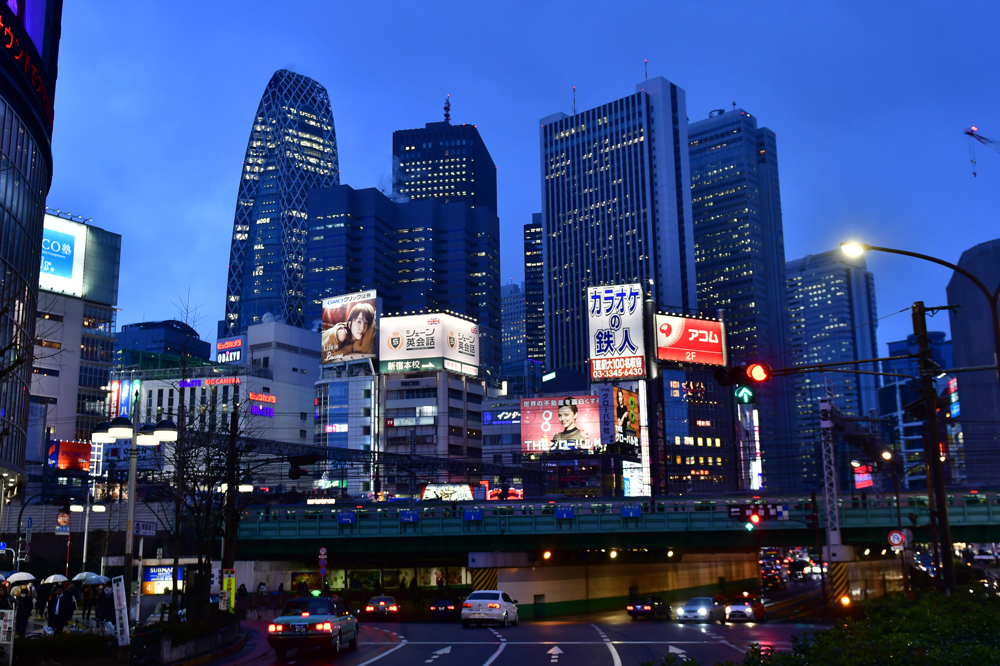

Japán rengeteg egyedi és gyönyörű helyszínt kínál:
- Tokió – a modern város lenyűgöző felhőkarcolókkal
- Kyoto – tradicionális templomok és cseresznyefák
- Fuji-hegy – Japán legmagasabb és legismertebb hegye
- Osaka – a gasztronómia fővárosa
Ajánlott utazási portál: japan.travel
